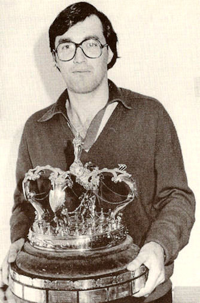
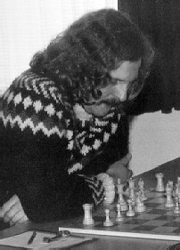
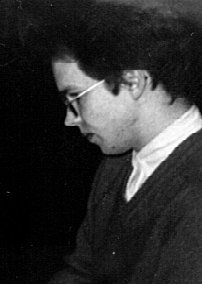
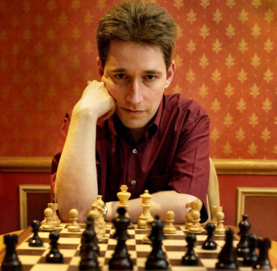

Jan van Reek
|
pgn
of annotated games in
British championships Zip-file
of British chess championships
The championship was open for the whole
British empire. So, the Indian Mir Sultan Khan could win three times.
British chess was interrupted by World War II. Alexander, Milner
Barry and Golombek were code breakers at Bletchley Park during
this awful time. The BCF championships were closed events for twelve
participants from 1904 until 1948. Thereafter, the number of
players increased. They carried out eleven rounds according to the
Swiss system. A fine attacking player was Jonathan Penrose. He
won the title a record number of ten times.
|
A new generation of strong players started at the end of the sixties and during the seventies. William Hartston, Raymond Keene, George Botterill Jonathan Mestel, John Nunn, Jonathan Speelman and Tony Miles were among them. Miles became the first British grandmaster. Nigel Short, Michael Adams and Julian Hodgson began as wonder boys. British chess players started to compete as candidates for the world championship in the eighties. When sponsors were lacking in the nineties, the professionals stayed absent. Entertaining play by Julian Hodgson compensated for the difference.
The British championship was open for all Commonwealth players until many Indians began to participate. Only inhabitants of Great Britain are allowed since 2004. Rowson utilized the opportunity three times in a row. Adams won twice when the sponsorship was sufficient. About eight-hundred persons occupied the many groups in 2012. Britain has a long tradition of championships in the summer and Hastings events in the winter vacations.
|  |  |  |  | |
| Jonathan Mestel |
Paul Littlewood holds the trophy in 1981 |
Tony Miles | Nigel Short | Michael Adams |
British chess champions
| BCA Challenge
Cup: 1866 De Vere 1869 Blackburne 1870 Wisker 1872 Wisker BCF: 1 1904 Napier 2 1905 Atkins 3 1906 Atkins 4 1907 Atkins 5 1908 Atkins 6 1909 Atkins 7 1910 Atkins 8 1911 Atkins 9 1912 Griffith 10 1913 Yates 11 1914 Yates 13 1920 Scott 14 1921 Yates 16 1923 Thomas 17 1924 Atkins 18 1925 Atkins 19 1926 Yates 21 1928 Yates 22 1929 Sultan Khan 24 1931 Yates 25 1932 Sultan Khan 26 1933 Sultan Khan 27 1934 Thomas 28 1935 Winter 29 1936 Winter 30 1937 Fairhurst 31 1938 Alexander |
33 1946 Combe 34 1947 Golombek 35 1948 Broadbent 36 1949 Golombek 37 1950 Broadbent 38 1951 Klein 39 1952 Wade 40 1953 Yanofsky 41 1954 Barden and Phillips 42 1955 Golombek 43 1956 Alexander 44 1957 Fazekas 45 1958 Penrose 46 1959 Penrose 47 1960 Penrose 48 1961 Penrose 49 1962 Penrose 50 1963 Penrose 51 1964 Haygarth 52 1965 Lee 53 1966 Penrose 54 1967 Penrose 55 1968 Penrose 56 1969 Penrose 57 1970 Wade 58 1971 Keene 59 1972 Eley 60 1973 Hartston 61 1974 Botterill 62 1975 Hartston 63 1976 Mestel 64 1977 Botterill 65 1978 Speelman 66 1979 Bellin 67 1980 Nunn |
68 1981 Paul Littlewood 69 1982 Miles 70 1983 Mestel 71 1984 Short 72 1985 Speelman 73 1986 Speelman 74 1987 Short 75 1988 Mestel 76 1989 Adams 77 1990 Plaskett 78 1991 Hodgson 79 1992 Hodgson 80 1993 Hennigan 81 1994 Watson 82 1995 Sadler 83 1996 Ward 84 1997 Adams and Sadler 85 1998 Short 86 1999 Hodgson 87 2000 Hodgson 88 2001 Gallagher 89 2002 Ramesh 90 2003 Kunte GBR: 91 2004 Rowson 92 2005 Rowson 93 2006 Rowson 94 2007 Aagaard 95 2008 Conquest 96 2009 Howell 97 2010 Adams 98 2011 Adams 99 2012 Jones 100 2013 Howell 101 2014 Howell and Hawkins |
 |
Go to home page |
All chess tournaments in Hastings